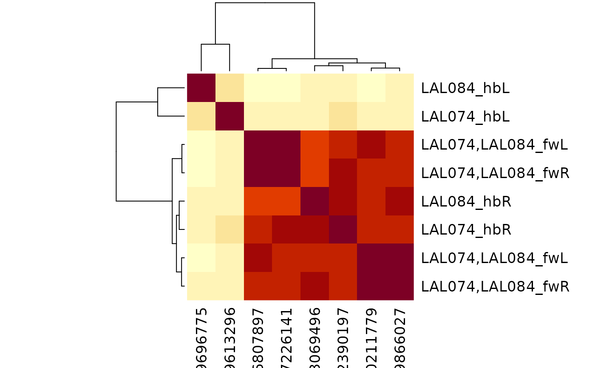

Cosine cluster across hemibrain and flywire
Usage
triple_cosine_plot(
x,
fwtype = x,
version = NULL,
...,
threshold = 5,
partners = c("outputs", "inputs"),
labRow = "{type}_{abbreviate_datasets(dataset)}{side}",
group = "type",
heatmap = TRUE,
interactive = FALSE,
nas = c("zero", "drop"),
method = c("ward.D", "single", "complete", "average", "mcquitty", "median", "centroid",
"ward.D2")
)Arguments
- x
Hemibrain ids or a dataframe generated by
triple_connection_table- fwtype
Optional flywire ids interpreted by
flywire_idsfunction- version
Connectome data dump version. See
flywire_connectome_data_versionfor details.- ...
Additional arguments to heatmap
- threshold
Minimum connection weight to be included when finding partners
- partners
Whether to use output or input partners for clustering. Default now uses both.
- labRow
A character vector defining labels for the rows of the resultant heatmap
- group
What column to use for grouping partners.
- heatmap
A logical indicating whether or not to plot the heatmap OR a function to plot the heatmap whose argument names are compatible with
stats::heatmap.gplots::heatmap.2is a good example.- interactive
When
TRUEreturns a shiny-based interactive heatmap- nas
What to do with rows/columns with NAs when computing cosine matrix. Dropping may be more mathematically satisfactory but eliminates neurons from the comparison, so the default is to set NA elements to do 0 similarity.
- method
the clustering method. See
hclustfor details.
Value
A list as returned by heatmap
Details
Note that for bilateral neurons it may work better to use either input partners or output partners but not both.
Examples
# \donttest{
# AOTU063 should be separated into two subtypes.
# Very clear based on output clustering and also some small morphological differences.
triple_cosine_plot('AOTU063', partners = 'o')
#> Error in add_celltype_info(res, idcol = partner_col, version = version): Expect either character or integer64 ids!
# LAL074/LAL084 are the same type.
# Were incorrectly split due to annotation into separate hemibrain CBFs
# note that the compound type 'LAL074,LAL084' will be used to find flywire
# neurons but expanded to the regex "(LAL074|LAL084)" in order to find
# both hemibrain types
triple_cosine_plot('LAL074,LAL084', partners = 'i')
#> Matching types across datasets. Keeping 866/1276 input connections with total weight 19664/26346 (75%)

# }